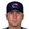
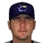
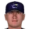
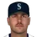
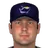
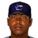
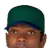

Franchise record book · ABL
Tampa Bay Rays
Seasons covered: 1998–2002. Only games played for this franchise count.
Read this first: seasons 1871–2001 are real MLB history that shipped with the OOTP file, mapped by OOTP onto this universe's 30 original franchises (club names as they were that season). 2002 is this universe, season to date (top tiers: MLB, ABL, FBL). Player names are as the export stores them; OOTP gives some historical players generated names.
Home runs
Hits
RBI
Runs
Stolen bases
| # | Player | Season | Team | Stolen bases |
|---|---|---|---|---|
| #1 | 2001 |  Tampa Bay Devil Rays Tampa Bay Devil Rays | 31 | |
| #2 | 2000 | Tampa Bay Devil Rays | 28 | |
| #3 | 1998 | Tampa Bay Devil Rays | 26 | |
| #4 | 1999 | Tampa Bay Devil Rays | 22 | |
| #5 | 1998 | Tampa Bay Devil Rays | 19 | |
| #6 | 1998 | Tampa Bay Devil Rays | 19 | |
| #7 | 1999 | Tampa Bay Devil Rays | 13 | |
| #8 | 1998 | Tampa Bay Devil Rays | 13 | |
| #9 | 2002 (ABL) | Tampa Bay Rays | 12 | |
| #10 | 2001 | Tampa Bay Devil Rays | 12 |
Doubles
Triples
Walks
Total bases
| # | Player | Season | Team | Total bases |
|---|---|---|---|---|
| #1 | 1999 | Tampa Bay Devil Rays | 292 | |
| #2 | 2000 | Tampa Bay Devil Rays | 270 | |
| #3 | 2000 | Tampa Bay Devil Rays | 256 | |
| #4 | 1998 | Tampa Bay Devil Rays | 252 | |
| #5 | 1998 | Tampa Bay Devil Rays | 250 | |
| #6 | 1999 | Tampa Bay Devil Rays | 242 | |
| #7 | 2000 | Tampa Bay Devil Rays | 230 | |
| #8 | 2001 | Tampa Bay Devil Rays | 210 | |
| #9 | 2001 | Tampa Bay Devil Rays | 210 | |
| #10 | 1999 | Tampa Bay Devil Rays | 199 |
Batting average qualified
| # | Player | Season | Team | Batting average |
|---|---|---|---|---|
| #1 | 2002 (ABL) | Tampa Bay Rays | .347 | |
| #2 | 1999 | Tampa Bay Devil Rays | .310 | |
| #3 | 1999 | Tampa Bay Devil Rays | .295 | |
| #4 | 1998 | Tampa Bay Devil Rays | .292 | |
| #5 |  Chase Utley • | 2002 (ABL) | Tampa Bay Rays | .287 |
| #6 | 1999 | Tampa Bay Devil Rays | .284 | |
| #7 | 1998 | Tampa Bay Devil Rays | .284 | |
| #8 | 2000 | Tampa Bay Devil Rays | .277 | |
| #9 | 2000 | Tampa Bay Devil Rays | .274 | |
| #10 | 1998 | Tampa Bay Devil Rays | .268 |
On-base % qualified
| # | Player | Season | Team | On-base % |
|---|---|---|---|---|
| #1 | 1999 | Tampa Bay Devil Rays | .405 | |
| #2 | 2002 (ABL) | Tampa Bay Rays | .400 | |
| #3 | 2000 | Tampa Bay Devil Rays | .373 | |
| #4 | 2001 | Tampa Bay Devil Rays | .372 | |
| #5 | 1998 | Tampa Bay Devil Rays | .371 | |
| #6 | Chase Utley • | 2002 (ABL) | Tampa Bay Rays | .366 |
| #7 | 2000 | Tampa Bay Devil Rays | .365 | |
| #8 | 1999 | Tampa Bay Devil Rays | .361 | |
| #9 | 2002 (ABL) | Tampa Bay Rays | .345 | |
| #10 | 1999 | Tampa Bay Devil Rays | .335 |
Slugging % qualified
| # | Player | Season | Team | Slugging % |
|---|---|---|---|---|
| #1 | 1999 | Tampa Bay Devil Rays | .552 | |
| #2 | 2000 | Tampa Bay Devil Rays | .499 | |
| #3 | 2002 (ABL) | Tampa Bay Rays | .467 | |
| #4 | 2002 (ABL) | Tampa Bay Rays | .458 | |
| #5 | 2000 | Tampa Bay Devil Rays | .452 | |
| #6 | 1998 | Tampa Bay Devil Rays | .443 | |
| #7 | Chase Utley • | 2002 (ABL) | Tampa Bay Rays | .441 |
| #8 | 2001 | Tampa Bay Devil Rays | .433 | |
| #9 | 2000 | Tampa Bay Devil Rays | .427 | |
| #10 | 1998 | Tampa Bay Devil Rays | .410 |
OPS qualified
| # | Player | Season | Team | OPS |
|---|---|---|---|---|
| #1 | 1999 | Tampa Bay Devil Rays | .957 | |
| #2 | 2000 | Tampa Bay Devil Rays | .864 | |
| #3 | 2000 | Tampa Bay Devil Rays | .826 | |
| #4 | 1998 | Tampa Bay Devil Rays | .815 | |
| #5 | Chase Utley • | 2002 (ABL) | Tampa Bay Rays | .807 |
| #6 | 2002 (ABL) | Tampa Bay Rays | .793 | |
| #7 | 2002 (ABL) | Tampa Bay Rays | .785 | |
| #8 | 2002 (ABL) | Tampa Bay Rays | .781 | |
| #9 | 2001 | Tampa Bay Devil Rays | .766 | |
| #10 | 2001 | Tampa Bay Devil Rays | .760 |
WAR (OOTP)
| # | Player | Season | Team | WAR (OOTP) |
|---|---|---|---|---|
| #1 | 1999 | Tampa Bay Devil Rays | 4.6 | |
| #2 | 1999 | Tampa Bay Devil Rays | 3.5 | |
| #3 | 2000 | Tampa Bay Devil Rays | 2.9 | |
| #4 | 1998 | Tampa Bay Devil Rays | 2.7 | |
| #5 | 2001 | Tampa Bay Devil Rays | 2.6 | |
| #6 | 2001 | Tampa Bay Devil Rays | 2.5 | |
| #7 | 2000 | Tampa Bay Devil Rays | 2.3 | |
| #8 | 1999 | Tampa Bay Devil Rays | 1.9 | |
| #9 | 2001 | Tampa Bay Devil Rays | 1.6 | |
| #10 | 2001 | Tampa Bay Devil Rays | 1.6 |
Wins
Strikeouts
| # | Player | Season | Team | Strikeouts |
|---|---|---|---|---|
| #1 | 1998 | Tampa Bay Devil Rays | 172 | |
| #2 | 1998 | Tampa Bay Devil Rays | 152 | |
| #3 | 1999 | Tampa Bay Devil Rays | 128 | |
| #4 | 2001 | Tampa Bay Devil Rays | 123 | |
| #5 | 1999 | Tampa Bay Devil Rays | 123 | |
| #6 | 2001 | Tampa Bay Devil Rays | 119 | |
| #7 | 2000 | Tampa Bay Devil Rays | 111 | |
| #8 | 2001 | Tampa Bay Devil Rays | 110 | |
| #9 | 1999 | Tampa Bay Devil Rays | 107 | |
| #10 | 1998 | Tampa Bay Devil Rays | 107 |
Saves
| # | Player | Season | Team | Saves |
|---|---|---|---|---|
| #1 | 1999 | Tampa Bay Devil Rays | 43 | |
| #2 | 2000 | Tampa Bay Devil Rays | 32 | |
| #3 | 1998 | Tampa Bay Devil Rays | 26 | |
| #4 | 2001 | Tampa Bay Devil Rays | 22 | |
| #5 | 2001 | Tampa Bay Devil Rays | 5 | |
| #6 |  Rafael Betancourt • | 2002 (ABL) | Tampa Bay Rays | 5 |
| #7 | Grant Balfour • | 2002 (ABL) | Tampa Bay Rays | 3 |
| #8 |  Seth Etherton • | 2002 (ABL) | Tampa Bay Rays | 2 |
| #9 | 2000 | Tampa Bay Devil Rays | 2 | |
| #10 |  Rick White • | 2000 | Tampa Bay Devil Rays | 2 |
Innings
| # | Player | Season | Team | Innings |
|---|---|---|---|---|
| #1 | 1998 | Tampa Bay Devil Rays | 202.0 | |
| #2 | 2001 | Tampa Bay Devil Rays | 195.1 | |
| #3 | 1998 | Tampa Bay Devil Rays | 192.1 | |
| #4 | 2000 | Tampa Bay Devil Rays | 185.1 | |
| #5 | 1999 | Tampa Bay Devil Rays | 180.1 | |
| #6 | 2000 | Tampa Bay Devil Rays | 173.1 | |
| #7 | 1999 | Tampa Bay Devil Rays | 160.0 | |
| #8 | 2001 | Tampa Bay Devil Rays | 151.1 | |
| #9 | 2001 | Tampa Bay Devil Rays | 143.1 | |
| #10 | 1998 | Tampa Bay Devil Rays | 142.2 |
Complete games
Shutouts
| # | Player | Season | Team | Shutouts |
|---|---|---|---|---|
| #1 | 1998 | Tampa Bay Devil Rays | 2 | |
| #2 | 1999 | Tampa Bay Devil Rays | 2 | |
| #3 | 2000 | Tampa Bay Devil Rays | 1 | |
| #4 | 2000 | Tampa Bay Devil Rays | 1 | |
| #5 | 2000 | Tampa Bay Devil Rays | 1 | |
| #6 | 2001 | Tampa Bay Devil Rays | 1 | |
| #7 | 2001 | Tampa Bay Devil Rays | 0 | |
| #8 | 1998 | Tampa Bay Devil Rays | 0 | |
| #9 | Seth Etherton • | 2002 (ABL) | Tampa Bay Rays | 0 |
| #10 |  Josh Fogg • | 2002 (ABL) | Tampa Bay Rays | 0 |
ERA qualified
| # | Player | Season | Team | ERA |
|---|---|---|---|---|
| #1 | 1998 | Tampa Bay Devil Rays | 3.56 | |
| #2 |  Jerome Williams • | 2002 (ABL) | Tampa Bay Rays | 3.58 |
| #3 | 2002 (ABL) | Tampa Bay Rays | 3.69 | |
| #4 | 2002 (ABL) | Tampa Bay Rays | 3.73 | |
| #5 | 1998 | Tampa Bay Devil Rays | 4.12 | |
| #6 | 2000 | Tampa Bay Devil Rays | 4.13 | |
| #7 | 2000 | Tampa Bay Devil Rays | 4.41 | |
| #8 | 2001 | Tampa Bay Devil Rays | 4.42 | |
| #9 | 1999 | Tampa Bay Devil Rays | 5.84 | |
| #10 | Josh Fogg • | 2002 (ABL) | Tampa Bay Rays | 6.80 |
WHIP qualified
| # | Player | Season | Team | WHIP |
|---|---|---|---|---|
| #1 | 2002 (ABL) | Tampa Bay Rays | 1.11 | |
| #2 | 1998 | Tampa Bay Devil Rays | 1.29 | |
| #3 | 2002 (ABL) | Tampa Bay Rays | 1.38 | |
| #4 | 2000 | Tampa Bay Devil Rays | 1.38 | |
| #5 | Jerome Williams • | 2002 (ABL) | Tampa Bay Rays | 1.39 |
| #6 | 2001 | Tampa Bay Devil Rays | 1.43 | |
| #7 | 2000 | Tampa Bay Devil Rays | 1.45 | |
| #8 | 1998 | Tampa Bay Devil Rays | 1.57 | |
| #9 | 1999 | Tampa Bay Devil Rays | 1.71 | |
| #10 | Josh Fogg • | 2002 (ABL) | Tampa Bay Rays | 1.76 |
K/9 qualified
| # | Player | Season | Team | K/9 |
|---|---|---|---|---|
| #1 | 2002 (ABL) | Tampa Bay Rays | 8.1 | |
| #2 | 1998 | Tampa Bay Devil Rays | 8.0 | |
| #3 | Josh Fogg • | 2002 (ABL) | Tampa Bay Rays | 7.0 |
| #4 | 2002 (ABL) | Tampa Bay Rays | 6.9 | |
| #5 | 1998 | Tampa Bay Devil Rays | 6.8 | |
| #6 | Jerome Williams • | 2002 (ABL) | Tampa Bay Rays | 6.3 |
| #7 | 1999 | Tampa Bay Devil Rays | 6.1 | |
| #8 | 2001 | Tampa Bay Devil Rays | 5.1 | |
| #9 | 2000 | Tampa Bay Devil Rays | 4.9 | |
| #10 | 2000 | Tampa Bay Devil Rays | 4.7 |
WAR (OOTP)
| # | Player | Season | Team | WAR (OOTP) |
|---|---|---|---|---|
| #1 | 1998 | Tampa Bay Devil Rays | 3.3 | |
| #2 | 1998 | Tampa Bay Devil Rays | 3.2 | |
| #3 | 2000 | Tampa Bay Devil Rays | 2.8 | |
| #4 | 2002 (ABL) | Tampa Bay Rays | 2.1 | |
| #5 | 2000 | Tampa Bay Devil Rays | 1.9 | |
| #6 | 1999 | Tampa Bay Devil Rays | 1.8 | |
| #7 | Rick White • | 1999 | Tampa Bay Devil Rays | 1.8 |
| #8 | 1999 | Tampa Bay Devil Rays | 1.8 | |
| #9 | 2000 | Tampa Bay Devil Rays | 1.7 | |
| #10 | 2000 | Tampa Bay Devil Rays | 1.7 |
Home runs
| # | Player | Years | Home runs |
|---|---|---|---|
| #1 | 1986–02 | 97 | |
| #2 | 1989–02 | 52 | |
| #3 | 1985–02 | 43 | |
| #4 | 1997–02 | 33 | |
| #5 | 1992–02 | 31 | |
| #6 | 1989–99 | 28 | |
| #7 | 1992–02 | 25 | |
| #8 | 1999–02 | 23 | |
| #9 |  Bobby Smith • | 1998–02 | 20 |
| #10 | 1996–02 | 17 |
Hits
| # | Player | Years | Hits |
|---|---|---|---|
| #1 | 1986–02 | 590 | |
| #2 | 1996–02 | 373 | |
| #3 | 1992–02 | 349 | |
| #4 | 1998–02 | 332 | |
| #5 | 1986–01 | 252 | |
| #6 | 1989–02 | 230 | |
| #7 | 1992–02 | 221 | |
| #8 | 1995–02 | 220 | |
| #9 | 1982–99 | 210 | |
| #10 | 1996–02 | 192 |
RBI
| # | Player | Years | RBI |
|---|---|---|---|
| #1 | 1986–02 | 352 | |
| #2 | 1992–02 | 163 | |
| #3 | 1989–02 | 156 | |
| #4 | 1985–02 | 125 | |
| #5 | 1996–02 | 116 | |
| #6 | 1997–02 | 107 | |
| #7 | 1998–02 | 107 | |
| #8 | 1992–02 | 106 | |
| #9 | Bobby Smith • | 1998–02 | 101 |
| #10 | 1989–99 | 99 |
Runs
| # | Player | Years | Runs |
|---|---|---|---|
| #1 | 1986–02 | 270 | |
| #2 | 1998–02 | 177 | |
| #3 | 1996–02 | 159 | |
| #4 | 1989–02 | 157 | |
| #5 | 1992–02 | 130 | |
| #6 | 1986–01 | 122 | |
| #7 | 1992–02 | 117 | |
| #8 | 1985–02 | 106 | |
| #9 | 1995–02 | 102 | |
| #10 | 1993–00 | 96 |
Stolen bases
| # | Player | Years | Stolen bases |
|---|---|---|---|
| #1 | 1996–02 | 69 | |
| #2 | 1998–02 | 53 | |
| #3 | 2000–02 | 37 | |
| #4 | 1995–02 | 25 | |
| #5 | 1992–02 | 22 | |
| #6 | 1986–01 | 22 | |
| #7 | 1989–02 | 19 | |
| #8 | 1993–00 | 15 | |
| #9 | 1997–02 | 15 | |
| #10 | 1994–99 | 13 |
Doubles
| # | Player | Years | Doubles |
|---|---|---|---|
| #1 | 1986–02 | 99 | |
| #2 | 1992–02 | 62 | |
| #3 | 1996–02 | 59 | |
| #4 | 1998–02 | 55 | |
| #5 | 1989–02 | 52 | |
| #6 | 1997–02 | 48 | |
| #7 | 1992–02 | 47 | |
| #8 | 1995–02 | 44 | |
| #9 | 1999–02 | 42 | |
| #10 | 1989–99 | 41 |
Triples
| # | Player | Years | Triples |
|---|---|---|---|
| #1 | 1998–02 | 19 | |
| #2 | 1996–02 | 12 | |
| #3 | 1995–02 | 8 | |
| #4 | 1986–01 | 7 | |
| #5 | 1993–00 | 6 | |
| #6 | 1997–02 | 5 | |
| #7 | 1982–99 | 5 | |
| #8 | 2000–02 | 5 | |
| #9 | 1997–02 | 5 | |
| #10 | 1996–02 | 5 |
Walks
| # | Player | Years | Walks |
|---|---|---|---|
| #1 | 1986–02 | 296 | |
| #2 | 1989–02 | 151 | |
| #3 | 1998–02 | 110 | |
| #4 | 1986–01 | 105 | |
| #5 | 1989–99 | 103 | |
| #6 | 1985–02 | 99 | |
| #7 | 1997–02 | 87 | |
| #8 | 1982–99 | 84 | |
| #9 | 1997–02 | 80 | |
| #10 | 1996–02 | 77 |
Total bases
| # | Player | Years | Total bases |
|---|---|---|---|
| #1 | 1986–02 | 982 | |
| #2 | 1992–02 | 506 | |
| #3 | 1996–02 | 483 | |
| #4 | 1998–02 | 455 | |
| #5 | 1989–02 | 440 | |
| #6 | 1992–02 | 347 | |
| #7 | 1997–02 | 344 | |
| #8 | 1985–02 | 340 | |
| #9 | 1986–01 | 336 | |
| #10 | 1995–02 | 304 |
Batting average min 2,000 PA
| # | Player | Years | Batting average |
|---|---|---|---|
| #1 | 1986–02 | .295 |
On-base % min 2,000 PA
| # | Player | Years | On-base % |
|---|---|---|---|
| #1 | 1986–02 | .384 |
Slugging % min 2,000 PA
| # | Player | Years | Slugging % |
|---|---|---|---|
| #1 | 1986–02 | .491 |
OPS min 2,000 PA
| # | Player | Years | OPS |
|---|---|---|---|
| #1 | 1986–02 | .874 |
WAR (OOTP)
| # | Player | Years | WAR (OOTP) |
|---|---|---|---|
| #1 | 1986–02 | 12.2 | |
| #2 | 1985–02 | 4.8 | |
| #3 | 1989–02 | 4.6 | |
| #4 | 1997–02 | 4.2 | |
| #5 | 1997–02 | 2.5 | |
| #6 | 1999–02 | 2.4 | |
| #7 | 1982–99 | 1.8 | |
| #8 | 1997–02 | 1.7 | |
| #9 | 1989–99 | 1.3 | |
| #10 | 1993–02 | 1.3 |
Wins
| # | Player | Years | Wins |
|---|---|---|---|
| #1 | 1993–02 | 26 | |
| #2 | 1998–02 | 21 | |
| #3 | 1996–02 | 19 | |
| #4 | 1999–02 | 18 | |
| #5 | 1995–02 | 18 | |
| #6 | 1995–01 | 15 | |
| #7 | 1989–02 | 15 | |
| #8 | Jim Mecir • | 1995–02 | 14 |
| #9 | Rick White • | 1994–02 | 10 |
| #10 | 1996–02 | 9 |
Strikeouts
| # | Player | Years | Strikeouts |
|---|---|---|---|
| #1 | 1996–02 | 298 | |
| #2 | 1995–02 | 292 | |
| #3 | 1999–02 | 281 | |
| #4 | 1993–02 | 262 | |
| #5 | 1998–02 | 259 | |
| #6 | 1989–02 | 235 | |
| #7 | 1997–99 | 202 | |
| #8 | 1991–02 | 185 | |
| #9 | Rick White • | 1994–02 | 167 |
| #10 | 1996–02 | 159 |
Saves
| # | Player | Years | Saves |
|---|---|---|---|
| #1 | 1991–02 | 101 | |
| #2 | 1996–02 | 23 | |
| #3 | 2001–02 | 5 | |
| #4 | Rafael Betancourt • | 2002–02 | 5 |
| #5 | 1993–02 | 4 | |
| #6 | Grant Balfour • | 2001–02 | 3 |
| #7 | Seth Etherton • | 2000–02 | 2 |
| #8 | Rick White • | 1994–02 | 2 |
| #9 | 2001–02 | 2 | |
| #10 | 1995–01 | 1 |
Innings
| # | Player | Years | Innings |
|---|---|---|---|
| #1 | 1995–02 | 495.1 | |
| #2 | 1993–02 | 453.2 | |
| #3 | 1999–02 | 376.2 | |
| #4 | 1996–02 | 349.2 | |
| #5 | 1998–02 | 342.2 | |
| #6 | 1989–02 | 302.2 | |
| #7 | 1995–01 | 248.0 | |
| #8 | Rick White • | 1994–02 | 248.0 |
| #9 | 1997–99 | 234.1 | |
| #10 | 1991–02 | 218.0 |
Complete games
| # | Player | Years | Complete games |
|---|---|---|---|
| #1 | 1993–02 | 5 | |
| #2 | 1998–02 | 4 | |
| #3 | 1993–02 | 3 | |
| #4 | 1995–02 | 3 | |
| #5 | 1986–01 | 3 | |
| #6 | 1997–99 | 2 | |
| #7 | 2000–02 | 1 | |
| #8 | 1995–01 | 1 | |
| #9 | 1997–00 | 1 | |
| #10 | 1989–02 | 1 |
Shutouts
| # | Player | Years | Shutouts |
|---|---|---|---|
| #1 | 1998–02 | 2 | |
| #2 | 1993–02 | 2 | |
| #3 | 1986–01 | 2 | |
| #4 | 1993–02 | 1 | |
| #5 | 2000–02 | 1 | |
| #6 | 2001–01 | 0 | |
| #7 | 1996–99 | 0 | |
| #8 | Seth Etherton • | 2000–02 | 0 |
| #9 | Josh Fogg • | 2001–02 | 0 |
| #10 | 2001–02 | 0 |
ERA min 500 IP
| # | Player | Years | ERA |
|---|
WHIP min 500 IP
| # | Player | Years | WHIP |
|---|
K/9 min 500 IP
| # | Player | Years | K/9 |
|---|
WAR (OOTP)
| # | Player | Years | WAR (OOTP) |
|---|---|---|---|
| #1 | 1995–02 | 4.8 | |
| #2 | 1998–02 | 4.3 | |
| #3 | 1993–02 | 3.5 | |
| #4 | 1997–99 | 3.2 | |
| #5 | 1996–02 | 3.1 | |
| #6 | 1989–02 | 3.0 | |
| #7 | 1991–02 | 2.9 | |
| #8 | Rick White • | 1994–02 | 2.7 |
| #9 | 1995–01 | 2.4 | |
| #10 | Jim Mecir • | 1995–02 | 2.3 |
The franchise's best real-history seasons by winning percentage.